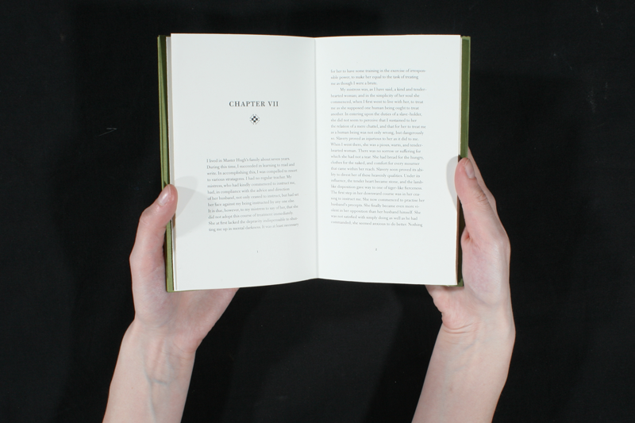
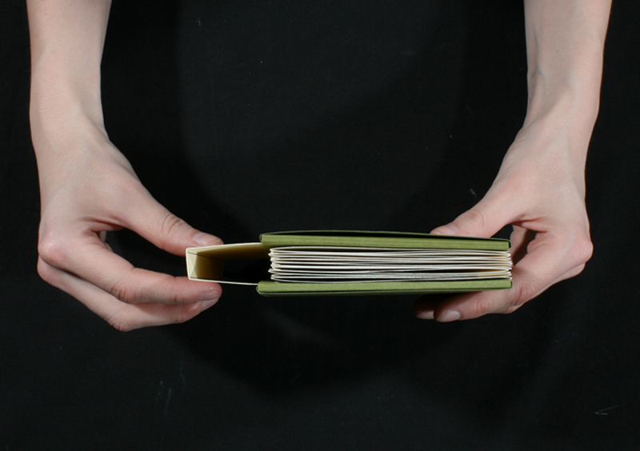
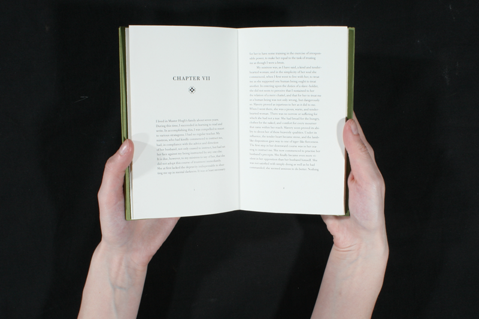
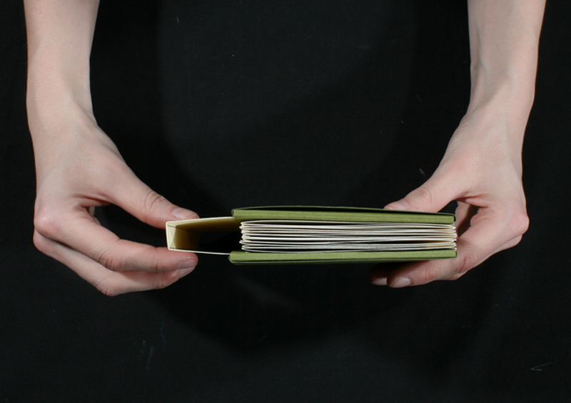

The Glorious Light of Truth
For this project, our class was asked to choose a letter from the collection of historical correspondance, Letters of a Nation, as well as a text of our own choice, and design a typographic book that gives context to the letter. I chose the letter Frederick Douglass wrote to his former master Thomas Auld titled To My Old Master. While researching the life of Frederick Douglass I was struck by the lengths he went through to become educated, an especially difficult task for slaves. For my corresponding text I chose two pieces that highlighted the power of knowledge. The first was Chapter 7 from his book Narrative of the Life of Frederick Douglass, an American Slave which details the hardships he went through to become literate. In this text he mentions Dialogue Between a Master and Slave from the schoolbook The Columbian Orator, which inspired him to escape slavery. I wanted the book's design to reflect that slaves were not allowed to receive an education, and if they did they had to keep it a secret. I learned how to bind a book so that it's spine could be removed and placed on the opposite end revealing the "hidden" text, the text about education. The symbol used throughout the book is the monkey wrench, a popular quilting pattern used on the Freedom Trail. The book was designed in Adobe InDesign and Adobe Illustrator, it is 4"x6.75"; printed on Mohawk Super Smooth paper. The endpapers are my own design of the monkey wrench symbol.